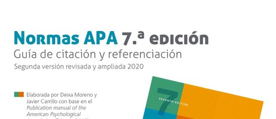
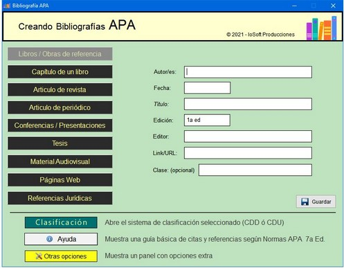
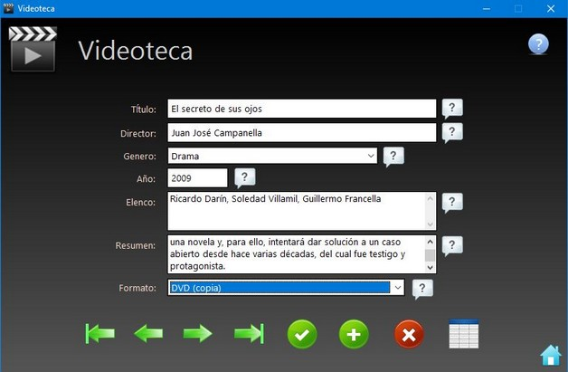
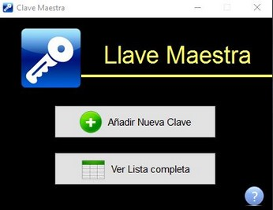
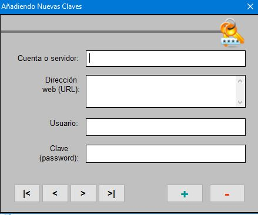
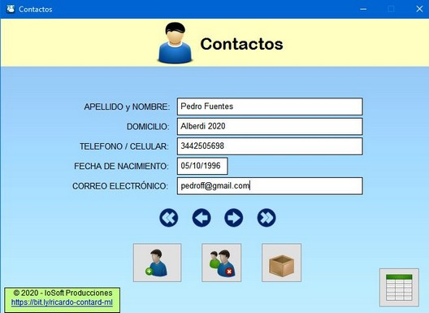
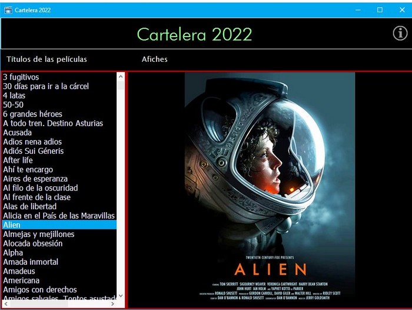
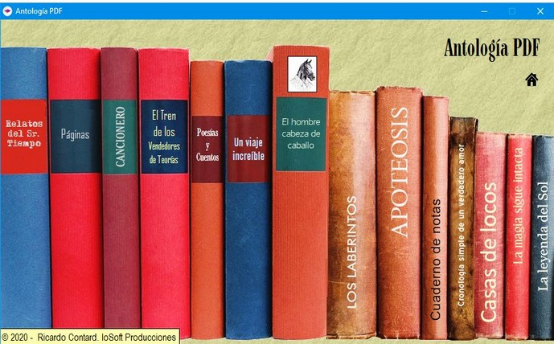

IoSoft Producciones
IoSoft Producciones
Gracias al programa NeoBook (de NeoSoft Corporation)
se han desarrollado diversas aplicaciones interactivas
para satisfacer las necesidades informáticas de los usuarios.
Biblos 2000 Profesional
En los tiempos que corren, donde la información y su gestión son esenciales en todo ámbito, surge esta herramienta acorde a las necesidades de cualquier documentalista: Biblos 2000 Profesional ; en sus versiones PERSONAL y NET (para uso en redes)
Con una simple interfaz pero una potencial capacidad para gestionar de manera eficaz procesos como catalogación, clasificación, inventario, circulación, consultas en línea (OPAC), y más... ; Biblos 2000 se coloca a la par de los demás Sistemas Integrales de Gestión Bibliotecaria (SIGB) para brindar un servicio diferente.
Descargue la versión de prueba desde la página oficial...


Biblio APA
Es una aplicación GRATUITA que le permite crear un listado de referencias bajo el estilo de las normas APA. Pudiendo distinguir entre libros impresos, capítulos, artículos de periódicos, conferencias, tesis, material audiovisual, contenido web, etc.
Aproveche la ayuda que esta aplicación le brinda...
En menos de un minuto se descarga, se instala y se usa!
Videoteca
Si es aficionado al "séptimo arte", genere y gestione fácilmente con esta aplicación una base de datos con los registros de todas las películas y videos que posee en su colección.
Incluye funcionalidades de ingreso, búsqueda, impresión...


Llave Maestra
Muchas personas suelen tener el inconveniente alguna vez de olvidar contraseñas para entrar a sitios o a cuentas en internet. Para ello hemos diseñado esta sencilla aplicación que le ayudará a mantener una base de datos organizada con todas las contraseñas que no necesita recordar todo el tiempo sino que usa esporádicamente.




Contactos
Es un programa simple y gratis que te ayuda a gestionar una base de datos de tus contactos personales, tus amigos, parientes, compañeros de trabajo, etc.; permitiendo incluso imprimir un listado detallado de los datos ingresados.

Cartelera 2022
Es una recopilación de una serie de imágenes (.jpg) de carteles o afiches de cine, correspondientes a la colección personal del autor; originada por el gusto por el cine e influenciada por el viejo pasatiempo de coleccionar esos carteles en formato impreso. Contiene alrededor de 700 afiches de películas de todos los géneros y todas las épocas...


Antología PDF
Un compendio de todas las obras literarias del autor apodado "Alicio Sacco".
NOTA: requiere tener instalado un programa para visualizar archivos PDF. (Ej.: Adobe Reader)

© 2022